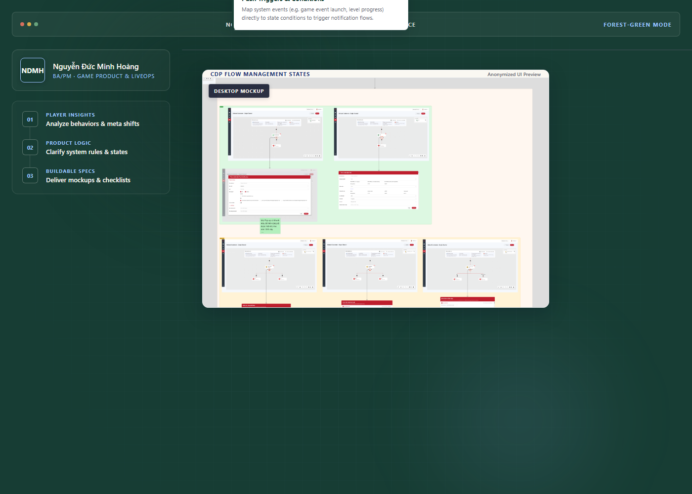

1. Hero Command Center Prototypes

Hero Command Center — Navy Version
Displays the game product command center in NDMH's default navy-night aesthetic. Integrates the sanitized event-state mockup and the Zalo chatbot flow.
Hoàng's Review Focus & Future Upgrades
- Check if the navy background matches the site-wide navbar and global theme.
- Evaluate if the sky-blue accents feel technical and crisp.
- Ready to be copied to production `/assets/hero-command-center.png` if approved.

Hero Command Center — Forest Version
Tests the dark forest green background (#173D34) with cream text. Intended to convey a mature, game operations and LiveOps command center identity.
Hoàng's Review Focus & Future Upgrades
- Evaluate whether the forest green background feels more premium and game-centric than the navy.
- Observe the contrast of the cream text and sky highlights on the forest green surface.
- Requires adding the forest green tokens to `tailwind.config.ts` if selected.
2. Case Study Thumbnail Prototypes

Case Study 1: Feature Logic & Notification Flow
Combines a cropped portion of the dense cdp-automation-flow-map.png inside a browser frame, overlaid with an acceptance criteria card and a detail preview of cdp-flow-management-states.png.
Replacement Checklist / Future Proof
- Verification: Replaces the raw, uncropped CDP flow maps.
- Aesthetic: Uses the forest-to-navy-night gradient to anchor the game-ops segment.
- Labeling: Displays "Sanitized product UI" to mark real project background.

Case Study 2: Product Operations & Feature Delivery
Displays a clean sprint release/Gantt timeline inside a tablet frame on a cream background, overlaid with a floating Jira user story Kanban card.
Replacement Checklist / Future Proof
- Verification: Replaces the abstract CSS-rendered timeline block.
- Aesthetic: Fits the light-cream style guide with clean, minimal layout.
- Labeling: Labeled "Visual template" since it represents operational process rather than client work.

Case Study 3: System Logic & Access Matrix
Presents a structured, clean role-permission matrix inside a browser frame, accompanied by a small role hierarchy node tree card overlay.
Replacement Checklist / Future Proof
- Verification: Replaces the dry CSS permission table in Case Study 3.
- Aesthetic: Uses the pale-blue gradient for a clean system-security vibe.
- Labeling: Labeled "Visual template" for anonymized role governance mapping.